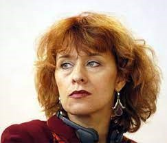

Jurga Ivanauskaitė
 Jurga Ivanauskaitė (1961–2007) – prozininkė, eseistė, dramaturgė, poetė, dailininkė, fotografė. Populiariausia XX a., antrosios pusės lietuvių rašytoja. Gimė Vilniuje, mokėsi Vilniaus 22-ojoje vidurinėje mokykloje. 1978 m. paskelbė pirmuosius eilėraščius žurnale „Moksleivis“. 1980 m. baigė M. K. Čiurlionio vidurinę meno mokyklą, 1985 m. – grafikos studijas Vilniaus dailės akademijoje, tais pačiais metais išleido pirmąją novelių knygą „Pakalnučių metai“. Kūrybinį kelią rašytoja pradėjo kaip „viskuo nusivylusių“ jaunuolių pasaulėjautos ir gyvenimo būdo reiškėja. Apsakymų ir romanų idėjos buvo artimos hipių judėjimams, vėliau kūrybiniai impulsai ateidavo iš feminizmo, krikščionybės. 1994 m. J. Ivanauskaitė pirmą kartą išvyko į Indiją, Dharamsaloje studijavo Tibeto budizmą. Pradėjo naują savo kūrybos etapą. Išvykdama pareiškė neberašysianti grožinės literatūros, kaip nesuderinamos su budistine praktika. Vis dėlto kelionių įspūdžiai ir nauja dvasinė patirtis buvo įprasminta kultūrologinės eseistikos trilogijoje, kuri laikoma J. Ivanauskaitės kūrybos viršūne. 1998 m. buvo surengta piešinių paroda „108 Mandalos“, 1999 m. fotografijos paroda „Tibetas – kita realybė“. 2005 m. buvo apdovanota Nacionaline premija už atvirumą pasauliui ir kultūrinei įvairovei knygoje „Tibeto mandala“ bei kintančių vertybių pojūtį romanuose. J. Ivanauskaitė mirė 2007 m. vasario 17 d. Ji yra palaidota Vilniuje, Antakalnio kapinėse Menininkų kalnelyje.
Kūryba
„Kaip užsiauginti baimę“ išsiskiria siurrealistine stilistika ir vizualiniu, spalviniu pasaulio vaizdavimu. Romanų „Mėnulio vaikai“, „Pragaro sodai“ pagrindiniai veikėjai – sovietinio ir posovietinio laikotarpio vaikai, maištaujantys prieš nusistovėjusias gyvenimo normas. Romane „Ragana ir lietus“ vaizduojama Marijos Magdalietės ir Jėzaus Kristaus, viduramžių moters ir šventojo, šiuolaikinės moters ir kunigo, draudžiamos meilės drama. „Agnijos magija: Romanas ne tik intelektualams”, „Sapnų nublokšti”- romanai, kuriuose atsispindi polinkis į Rytų mistiką ir egzotiškas patirtis „Placebas” - romanas, kuriame vaizduojamos dabartinės Lietuvos realijos, verslo, politikos, šou verslo veikėjai. „Miegančių drugelių tvirtovė” – romanas, kuriame yra aptariamos moterų socialinės problemos. „Ištremtas Tibetas”, „Kelionė į Šambalą”, „Prarasta Pažadėtoji žemė”, „Kelionių alchemija” - kūriniai „Tibeto mandaloje”. Juose pateikiami kelionių į Rytus įspūdžiai, pasakojma apie budizmą, jo filosofiją. „Šokis dykumoje” - eilėraščių rinkinys, kuriame vyrauja Rytų, daugiausia budizmo, filosofija, perteikiama Rytų dvasinių vertybių akivaizdoje atsidūrusio Vakarų žmogaus patirtis. „Nežaiskite su mėnuliu”, „Stebuklinga spanguolė”, „Kaip Marsis Žemėje laimės ieškojo”- jos pačios iliustruotos knygos.
Atminimo įamžinimas
J. Ivanauskaitės atminimui yra pastatytas paminklas. 2008 J. Ivanauskaitės kūrybos paveldo centras ir leidykla „Tyto alba“ įsteigė J. Ivanauskaitės premiją, teikiamą ne vyresniam nei 45 metų lietuvių autoriui už laisvą, atvirą ir drąsią kūrybinę raišką. Pagal J. Ivanauskaitės kūrybą yra sukurtas vaidybinis filmas „Nuodėmės užkalbėjimas“ (2007, režisierius A. Puipa). Apie J. Ivanauskaitę yra sukurtas dokumentinis filmas „Šokis dykumoje“ (2009, režisierė A. Marcinkevičiūtė). „Diena su Jurga Ivanauskaite“ „Savęs link. Jurga Ivanauskaitė ir Tibetas“ Vakaras su knyga. Jurga Ivanauskaitė, „Pakalnučių metai“. „Kada ateis Godo?“
Galerija
Jurgos Ivanauskaitės piešiniai